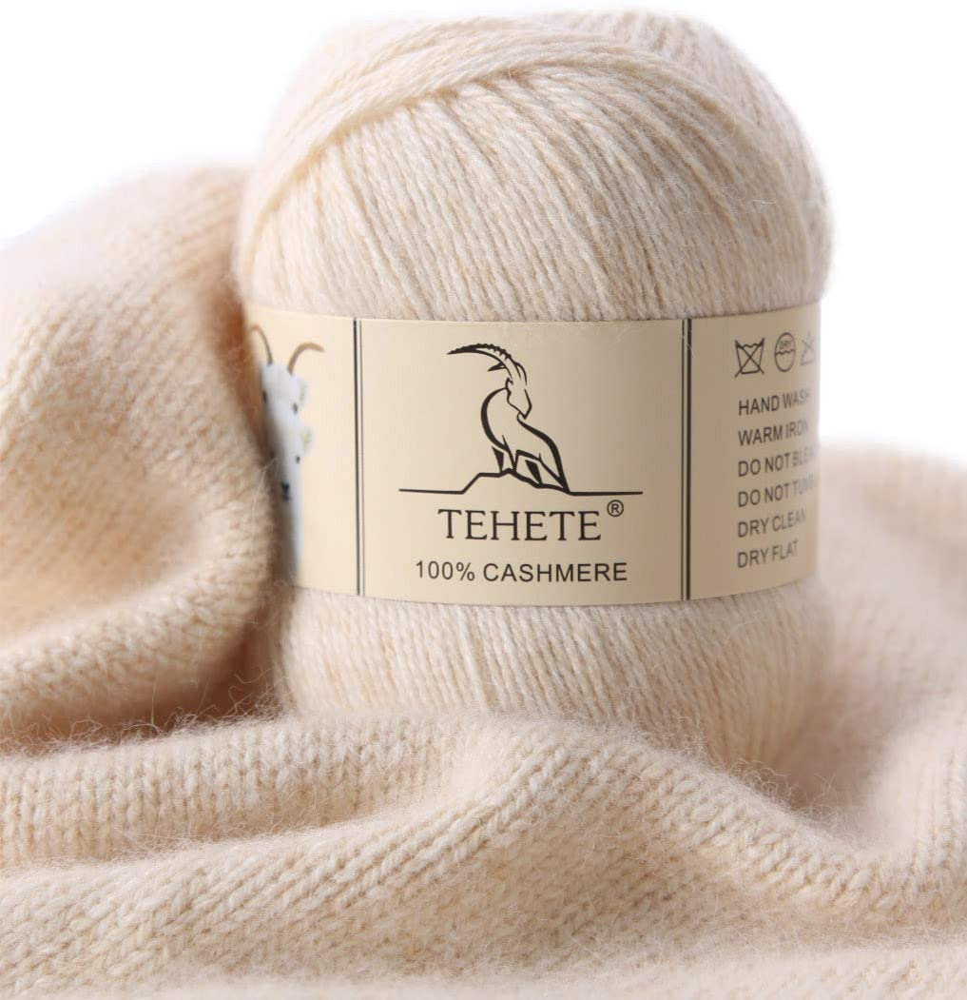
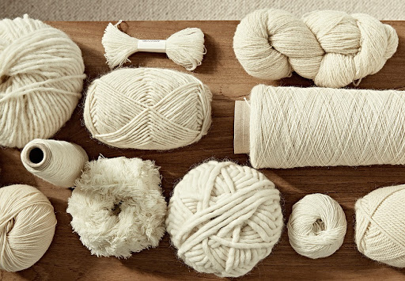

Premium Materials for a Quality Suit
Hedelios Men Suits only imports the highest quality materials from its various global partners
to ensure that all of its suits are of the utmost premium quality.
Hedelios Men Suits can guarantee world-class quality men suits to its clientele.
Exquisite Cashmere

Hedelios Men Suits utilizes imported cashmere from Turkey, which helps to
provide a high quality, very comfortable, and luxurious finish to its suits.
Our Cashmere-based suits are suitable for wedding ceremonies or reception parties.
Superb Wool

Hedelios Men Suits also proposes 100% wool for customers who may prefer the luscious texture
and warm comfort of a quality
wool-based suit.
Our Wool-based suits are ideal for day-to-day formal wear or meetings.
Organic dyes
In an effort to be environmentally friendly, Hedelios Men Suits only utilizes organic dyes for its unique color schemes.